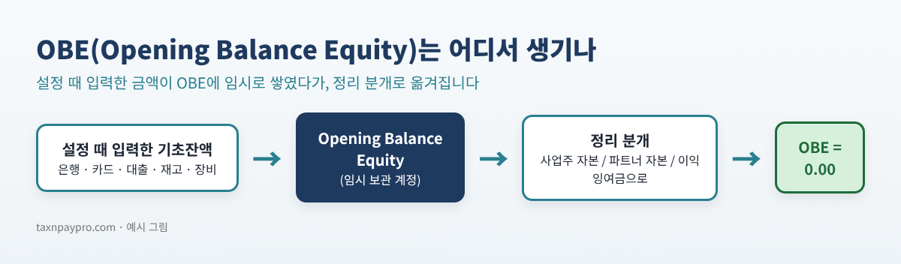
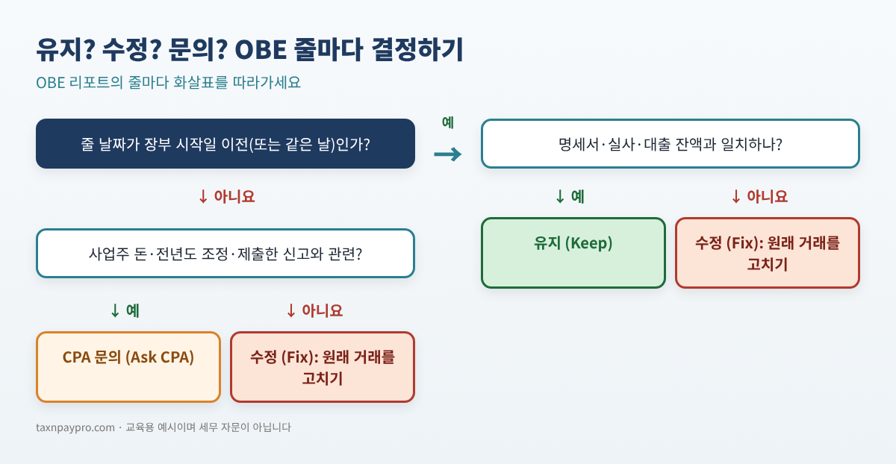
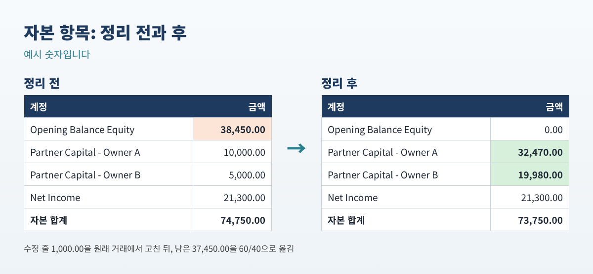

QuickBooks OBE(Opening Balance Equity) 잔액 정리법: 찾고, 고치고, 0으로 만들기
QuickBooks OBE(Opening Balance Equity) 잔액 정리법: 찾고, 고치고, 0으로 만들기
장부 설정을 마친 지 한참 지났는데도 대차대조표에 Opening Balance Equity(OBE)라는 줄이 남아 있나요? 매년 봄 CPA가 이 금액이 뭐냐고 묻는데, 안에 무엇이 들어 있는지 모르겠고, 인터넷 답변은 "분개 하나 하면 된다"는 말뿐, 어떤 분개를 해야 하는지, 잔액이 맞기는 한지 알려 주지 않습니다.
이 글은 정리 과정을 처음부터 끝까지 단계별로 설명합니다. 계정에 무엇이 들어 있는지 확인하고, 잘못된 부분은 고치고, 나머지는 알맞은 자본 계정으로 옮깁니다. 리포트 내보내기와 엑셀만 있으면 혼자서도 할 수 있습니다. QuickBooks Desktop과 Online 방법을 모두 적었습니다.
이런 분께: 설정·전환 이후 또는 몇 년간 "맞추기" 분개를 하다 보니 대차대조표에 OBE 잔액이 남아 있는 자영업자와 북키퍼.
OBE란 무엇인가 (1분 설명)
은행·카드·대출·자산 계정을 만들면서 기초잔액을 입력하거나, 재고 품목에 시작 수량을 넣으면 분개의 나머지 반쪽이 필요합니다. 프로그램은 그 반쪽을 Opening Balance Equity라는 임시 계정에 넣습니다.
설정 첫날에는 정상입니다. 하지만 OBE는 실제 자본 계정이 아닙니다. 설정이 끝나면 보통 이 잔액을 알맞은 자본 계정으로 옮겨, 깨끗한 대차대조표에서는 OBE가 0.00으로 보입니다.

잔액이 남는 흔한 이유
- 기초잔액을 잘못된 날짜로, 또는 두 번 입력했습니다.
- 시작일 이후에 "맞추려고" OBE로 분개나 입금을 넣었습니다.
- 대사(reconcile) 후에 은행 기초잔액을 수정했습니다.
- 사업주 돈이나 예전 고객·거래처 잔액을 OBE에 넣어 두었습니다.
1단계: OBE 계정의 모든 줄 내보내기
QuickBooks Desktop
- Lists > Chart of Accounts를 열고 Opening Balance Equity를 한 번 클릭합니다.
- 창 아래 Reports > QuickReport를 누르고 Dates를 All로 합니다.
- Excel > Create New Worksheet로 내보냅니다.
QuickBooks Online
- Chart of accounts를 엽니다. 메뉴에서 안 보이면 맨 위 검색창에 "Chart of accounts"를 입력하세요.
- Opening Balance Equity 줄의 Action 열에서 Account history 또는 Run report를 고릅니다 (계정·버전에 따라 이름이 다릅니다).
- 기간을 전체로 하고 Export 아이콘으로 엑셀을 내려받습니다.
먼저 확인: 금액 열을 모두 더해 보세요. 대차대조표의 OBE 잔액과 같아야 합니다. 숫자는 같은데 부호만 반대라면 내보낸 리포트의 부호 방식이 반대인 것이니, 금액 열에 -1을 곱한 뒤 계속하세요.
2단계: 줄마다 유지·수정·문의 결정하기
내보낸 표 옆에 결정 열을 하나 만들고, 아래 판단 흐름에 따라 한 줄씩 표시합니다.

아래는 8줄짜리 예시입니다 (예시 숫자).
| 날짜 | 유형 | 상대 계정 (Split) | 금액 | 결정 |
|---|---|---|---|---|
| 12/31/2025 | Deposit | Business Checking | 12,500.00 | 유지 |
| 12/31/2025 | Credit Card Charge | Business Credit Card | (3,200.00) | 유지 |
| 12/31/2025 | Inventory Adjust | Inventory Asset | 8,150.00 | 유지 |
| 12/31/2025 | General Journal | Equipment | 24,000.00 | 유지 |
| 12/31/2025 | General Journal | Equipment Loan | (9,000.00) | 유지 |
| 03/15/2026 | General Journal | Business Checking | 1,250.00 | 수정 |
| 05/02/2026 | Deposit | Business Savings | 5,000.00 | CPA 문의 |
| 12/31/2025 | Invoice | Accounts Receivable | (250.00) | 수정 |
표 1. OBE 리포트 예시. 합계 38,450.00으로 대차대조표와 일치.
직접 입력하는 엑셀 수식
날짜는 A열, 금액은 D열, 결정은 E열(2~200행), 장부 시작일은 H1 칸에 있다고 할 때:
| 구하려는 값 | 수식 |
|---|---|
| 전체 합계 | =SUM(D2:D200) |
| 시작일 이후 줄 수 | =COUNTIFS(A2:A200,">"&H1) |
| 유지 합계 | =SUMIFS(D2:D200,E2:E200,"유지") |
| 수정 합계 | =SUMIFS(D2:D200,E2:E200,"수정") |
| 정리할 금액 | =SUM(D2:D200)-SUMIFS(D2:D200,E2:E200,"수정") |
표 2. 수식 다섯 개로 대부분 해결됩니다.
예시에서 유지 = 32,450.00, 수정 = 1,000.00 (3/15 맞추기 분개와 A/R 줄), CPA 문의 = 5,000.00 ("owner money" 입금)입니다. 정리할 금액은 38,450.00 − 1,000.00 = 37,450.00입니다.
수정 줄 고치는 방법
- Desktop: QuickReport에서 줄을 더블클릭해 거래를 열고, 계정이나 날짜를 바꿔 저장합니다.
- Online: 리포트에서 줄을 클릭해 열고, 계정(또는 날짜)을 바꾼 뒤 Save.
- 그 줄이 대사 완료 상태면 수정 시 과거 대사가 바뀝니다. 명세서 잔액을 먼저 적어 두거나 회계사와 상의하세요.
- 고친 뒤 리포트를 다시 내보내면 수정 줄이 OBE에서 사라져야 합니다.
3단계: 정리 분개 입력
남은 잔액을 어디로 옮길지는 사업체 형태에 따라 다릅니다. 특히 법인은 장부가 제출한 세금 신고서의 대차대조표와 맞아야 하므로 CPA와 확인하세요.
| 사업체 형태 | 보통 옮기는 계정 |
|---|---|
| 개인사업자 / 1인 LLC | Owner's Equity (또는 Owner's Investment) |
| 다인 LLC / 파트너십 | 파트너별 자본(capital) 계정 (계약서 기준) |
| S 코퍼레이션 / C 코퍼레이션 | Retained Earnings 또는 Paid-in Capital: CPA와 확인 |
예시 파트너십(지분 60/40)의 정리 분개는 장부 시작일 날짜로 다음과 같습니다.
| 계정 | 차변 | 대변 |
|---|---|---|
| Opening Balance Equity | 37,450.00 | |
| Partner Capital - Owner A | 22,470.00 | |
| Partner Capital - Owner B | 14,980.00 | |
| 합계 | 37,450.00 | 37,450.00 |
표 3. 정리 분개 (예시 숫자). OBE가 음수면 차변·대변이 반대가 됩니다.
- Desktop: Company > Make General Journal Entries.
- Online: + New > Journal entry. 같은 줄·같은 날짜로 입력 후 Save.
- 그 날짜 기준 대차대조표에서 OBE가 0.00인지 확인합니다.

기간 잠그기
Desktop: Edit > Preferences > Accounting > Company Preferences > Set Date/Password. Online (Intuit "Lock your books" 도움말 기준): Settings > Account and settings > Advanced > Accounting > Edit에서 Close the books를 켜고, 마감일을 입력하고, 경고 또는 비밀번호 옵션을 고른 뒤 Save. primary 또는 company admin 권한이 필요합니다.
자주 하는 실수
- 잘못된 줄을 고치기 전에 OBE를 자본으로 옮기기. 오류가 자본 계정으로 옮겨갈 뿐입니다.
- 정리 분개를 장부 시작일이 아닌 오늘 날짜로 입력하기 (이미 신고했다면 CPA와 날짜 확인).
- 파트너십 계약서와 다르게 지분율로만 나누기.
- 대사 완료된 기초잔액을 명세서 잔액 확인 없이 수정하기.
- 사업주 출자를 출자로 기록하지 않고 OBE에 남겨 두기.
자주 묻는 질문
OBE 계정을 그냥 삭제하면 안 되나요?
안 됩니다. 프로그램이 기초잔액에 쓰는 시스템 계정입니다. 목표는 계정 삭제가 아니라 잔액 0입니다.
세금이 달라지나요?
OBE를 자본 계정 사이에서 옮기는 것만으로는 수입·비용이 바뀌지 않습니다. 다만 고친 줄이 사실 수입이나 비용이었다면 달라질 수 있으니 세무 담당자와 검토하세요.
정리했는데 OBE가 다시 생겼어요.
새 기초잔액이 들어간 것입니다. 기초잔액을 넣은 새 은행 계정, 수량을 넣은 새 재고 품목, 수정한 시작 잔액 등을 확인하세요. 리포트를 다시 실행해 가장 최근 줄을 보면 됩니다.
OBE가 음수인데 잘못된 건가요?
꼭 그렇지는 않습니다. 대출이나 카드 기초잔액이 크면 음수가 될 수 있습니다. 방법은 같고, 정리 분개에서 OBE를 대변에 기록하면 됩니다.
체크리스트
- ☐ OBE(전체 기간)를 내보내 합계가 대차대조표와 같은지 확인
- ☐ 모든 줄에 유지·수정·CPA 문의 표시
- ☐ 수정 줄은 원래 거래에서 고치기
- ☐ CPA 문의 줄은 답을 받기
- ☐ 정리 분개 입력, 차대 일치 확인
- ☐ 대차대조표 OBE = 0.00 확인, 마감일 설정과 백업
더 빨리 끝내고 싶다면
바로 쓰는 워크북이 필요하면, 위의 점검을 자동으로 해 주고 차대가 맞는 정리 분개까지 만들어 주는 OBE 잔액 정리 워크북 (영한판)을 Etsy와 Gumroad에서 받을 수 있습니다.
이 글은 교육용이며 세무·법률·회계 자문이 아니고, 결과는 각자의 기록에 따라 다릅니다. 메뉴 이름은 바뀔 수 있습니다. QuickBooks는 Intuit Inc.의 등록 상표이며, 이 글은 Intuit과 제휴·보증 관계가 없습니다.
출처: Intuit, "Lock your books in QuickBooks Online" (도움말, 2026-09-15 갱신): https://quickbooks.intuit.com/learn-support/en-us/help-article/close-books/close-books-quickbooks-online/L59LelyPM_US_en_US · QuickBooks 커뮤니티 OBE 정리 토론: https://quickbooks.intuit.com/community/other-questions-72/clearing-opening-balance-equity-147225 , https://quickbooks.intuit.com/community/reports-and-accounting-5/opening-balance-equity-and-retained-earnings-45836